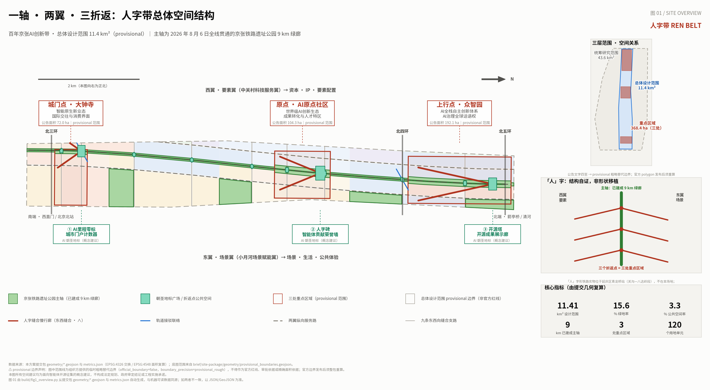
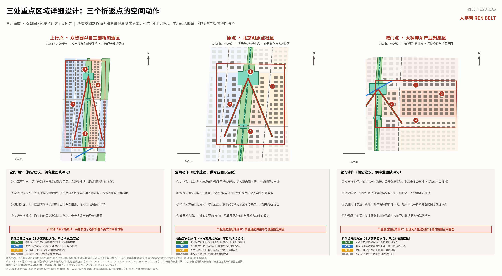
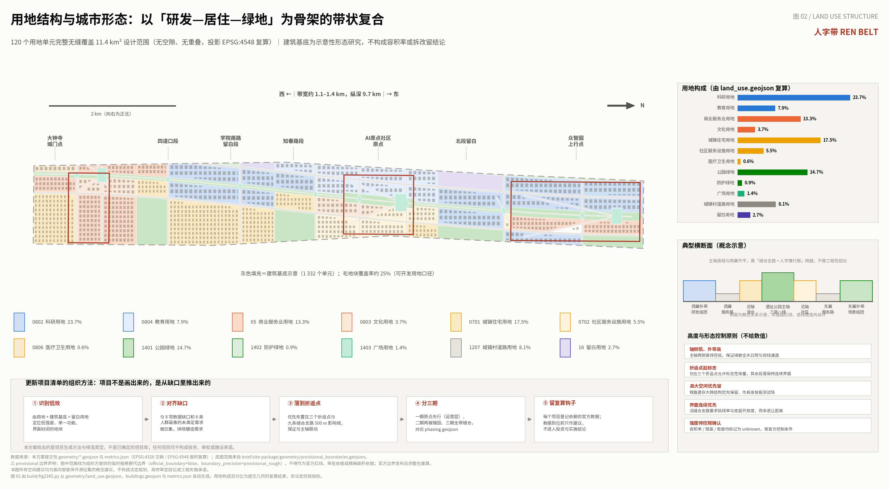
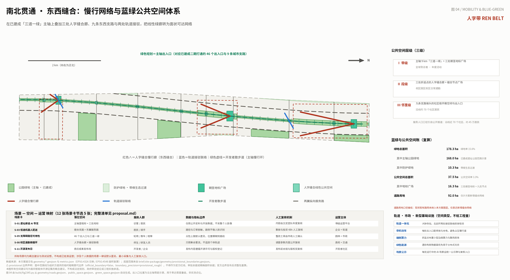
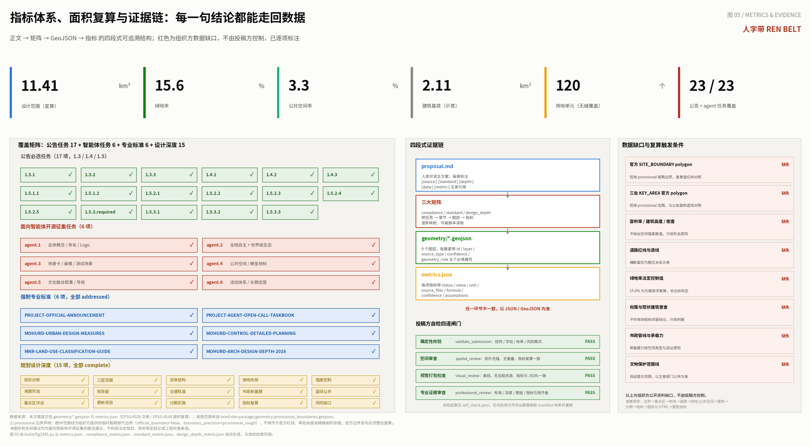

人字带 REN BELT：百年京张AI创新带城市设计方案
京张铁路遗址公园 9 公里绿廊已于 2026 年 8 月 6 日全线贯通，官方「三线织锦」中的历史线与生活线随之落地，创新线仍停留在概念层。本方案不重画绿廊，而是为已建成的主轴补上创新线：以「人字带」为总体概念与命名体系，用一轴（已建成主轴）、两翼（要素翼与场景翼）、三折返点（三处重点区域）组织空间，把 43.6 平方公里的产业叙事收敛为 11.4 平方公里的可实施缝合动作，并以 120 个无缝覆盖的用地单元、9 个 GeoJSON 图层、可复算指标和四段式证据链支撑每一句结论。
人字带 REN BELT：百年京张AI创新带城市设计方案
**一句话主张：这条绿廊已经建成了，缺的不是又一版公园设计，而是让它开始生产创新的那套机制与空间。**
据公开报道，京张铁路遗址公园二期已于 2026 年 8 月 6 日建成开放，全线约 9 公里南北贯通，累计打通 9 条城市支路、设置 46 个出入口，实现「三道一绿」连续 [source:PARK-COMPLETION-2026]。本次面向智能体的开源征集正好开放于其建成的次日。这意味着一个容易被忽略的判断：**本项目真正的设计对象，已经不是「如何把铁路廊道变成公园」，而是「公园建成之后，这条带凭什么成为 AI 创新带」。**
北京市规划和自然资源委员会公布的遗址公园规划解读中，中国建筑设计研究院方案提出「三线织锦」——历史线、生活线、创新线 [source:PARK-OFFICIAL-PLANNING]。对照二期建成成果可以看到：历史线（遗存复原、京张之环、枕木花园等）与生活线（46 个出入口、9 条支路、三道一绿、社区活力段）已经有了扎实的物质载体；**而创新线目前主要仍是叙事层面的表述，缺少可落位、可运营、可验证的空间与机制**。本方案把自己严格限定在这个空档里：不重复设计已建成的绿廊，专门补齐创新线。
设计依据与资料清单
本方案的第一依据是《百年京张AI创新带城市设计国际方案征集资格预审公告》所确立的项目目的、三层范围、六大设计任务与成果深度要求 [standard:PROJECT-OFFICIAL-ANNOUNCEMENT] [source:OFFICIAL-ANNOUNCEMENT]；第二依据是面向全球智能体开展开源征集的任务书摘录，包括十条共创原则、agent.1 至 agent.6 六项必选任务、统一评审维度与统一边界条款 [standard:PROJECT-AGENT-OPEN-CALL-TASKBOOK] [source:AGENT-TASKBOOK]。方案的机器可读依据来自仓库 brief/site-package/ 中的设计任务书、允许设计空间、枚举、指标区间与 schema [source:SITE-PACKAGE]，几何依据来自组织方提供的临时粗略替代边界 [source:BOUNDARY-SOURCE] [source:KEY-AREA-SOURCE]，资料用途边界依据 data/source_registry.json 的可用性登记 [source:SOURCE-REGISTRY]，阅读导航依据处理后的事实包 [source:PROCESSED-FACT-PACK]。任务背景、发展愿景与方案边界另参照仓库公开资料索引中的公开任务书草案 brief/public-brief.md 与资料边界说明 brief/README.md [source:SITE-PACKAGE]。
在专业方法层面，本方案按城市设计管理办法组织总体风貌、公共空间与建筑布局统筹 [standard:MOHURD-URBAN-DESIGN-MEASURES]，按控制性详细规划的城市设计深度组织用地、强度与设施内容 [standard:MOHURD-CONTROL-DETAILED-PLANNING]，用地分类采用国土空间调查、规划、用途管制用地用海分类指南的项目子集 [standard:MNR-LAND-USE-CLASSIFICATION-GUIDE]，成果深度参照建筑工程设计文件编制深度规定中方案阶段的表达要求 [standard:MOHURD-ARCH-DESIGN-DEPTH-2016]。以上标准均以仓库 brief/site-package/standards/references/ 中的本地参考快照为准，不以外部链接作为唯一证据。
**资料使用边界，逐条声明如下。** 第一，本方案未使用任何非公开的规划图件、权属资料或未经授权的第三方数据；所有事实性陈述要么来自上述登记来源，要么来自可公开检索并已在「参考资料」中列出的政府网站与主流媒体报道。第二，组织方提供的边界为 official_boundary=false、geometry_role=provisional_constraint、boundary_precision=provisional_rough 的临时粗略范围，本方案在全部图层、图纸、HTML 与假设文件中保持该标注，不将其表述为官方红线、审批依据或精确面积依据 [data:geometry/site_boundary.geojson#SITE-001]。第三，凡涉及容积率、建筑高度、建筑密度、道路红线、退线与法定绿地率的内容，本方案一律不给出数值结论，在 metrics.json 中标记为 unknown 并说明所需的官方来源 [metric:floor_area_ratio]。第四，方案中所有空间建议均为面向智能体开源征集的概念建议、参考方案或可供专业团队深化研究的材料，不替代法定规划，不构成政府审定结论、投资承诺或工程可行性结论。

现状诊断的基本判断可以概括为三句话 [depth:existing_conditions_diagnosis]：其一，**南北已通、东西未缝**——主轴 9 公里已经贯通，但廊道两侧的科研、居住、商业与校园之间的横向联系仍主要依赖既有城市道路，缺少专门为步行与创新交往设计的横向连接；其二，**空间已成、场景未生**——公园提供了优质的开敞空间，但缺少把 AI 研发、测试、发布、体验组织进公共空间的机制与设施；其三，**资源密集、界面封闭**——沿线高校、科研院所与企业密度极高，官方规划解读称沿线科创企业密度超过 800 家/平方公里 [source:PARK-OFFICIAL-PLANNING]，但大量科研与产业空间对公共空间是封闭的，创新过程不可见、不可参与。这三条诊断直接决定了本方案的三个动作：缝合、置入、开放。
三层范围工作框架
公告确立的三层范围在本方案中被赋予不同的工作性质，而不是同一套图纸的三种比例 [depth:three_level_scope_framework]。**统筹研究范围（43.6 平方公里）是判断层**：在这一层不画设计，只回答产业生态、区域协同与未来城市形态的战略问题，输出的是策略与关系图，不输出用地与红线。**总体设计范围（11.4 平方公里）是结构层**：在这一层确定一轴两翼三折返的空间骨架、用地结构、缝合网络、蓝绿公共空间体系与分期时序，达到控制性详细规划的城市设计深度 [standard:MOHURD-CONTROL-DETAILED-PLANNING]。**重点区域范围（368.4 公顷，三处）是验证层**：在这一层用具体的空间动作、场景落位与实施依赖，验证结构层的判断是否站得住。
三层之间以「可复算」而非「可套叠」相衔接。统筹层的每一条产业判断，必须在结构层找到对应的用地类型或公共空间类型；结构层的每一项空间决定，必须在验证层找到至少一个可描述的具体动作。凡是在下一层找不到落点的判断，本方案将其退回为「有待研究」，不写入结论。这一约束是本方案对「规划创新性」评审维度的直接回应：**综合规划的内涵不在于图纸层级的完整，而在于跨层级的可追溯性**。
本方案提交的边界几何采用组织方的 provisional 范围，投影至 EPSG:4548 后复算面积为 [metric:site_area_sqm]，与公告文字面积 11.4 平方公里量级一致，但**该复算值仅供量级对照，不作为精确面积依据**。三处重点区域以 area_id 与公告名称对应，面积分别与 192.1、104.3、72.0 公顷对照标注 [data:geometry/key_areas.geojson#PROV-KEY-001] [data:geometry/key_areas.geojson#PROV-KEY-002] [data:geometry/key_areas.geojson#PROV-KEY-003]，数量记为 [metric:key_area_count]。官方 polygon 发布后，边界、重点区、用地、道路、绿地、公共空间、建筑、分期与全部指标须按固定顺序整包重算，并重跑自检，不得只替换单个文件。
统筹研究范围产业与未来城市研究
总体概念与命名体系（agent.1）
**主名称：人字带（REN BELT）。标志：∧。**
「人」字来自京张铁路最广为人知的工程母题。这里必须先把一件事说清楚，因为它决定了引用是否成立：**「人」字形折返线的实物位于关沟—八达岭段的青龙桥站，行政区划属延庆区，距本项目场地数十公里，不在设计范围之内**；并且据官方与学界的一致口径，詹天佑并非「人」字形的发明者，而是借鉴了当时国外山区铁路已有的折返做法，做出了因地制宜的工程抉择 [source:JINGZHANG-HISTORY]。因此本方案**不把「人」字作为可以搬运的形状，而是作为可以继承的方法**。
那个方法是这样的：关沟段最大坡度达 33‰，远超当时机车的牵引能力；解决办法不是硬闯，而是折返——**以长度换高度，改变方向再上升**，并因此把八达岭隧道从约 1800 米缩短到 1091 米 [source:JINGZHANG-HISTORY]。今天海淀面对的「坡度」不是地形：是科研成果到产业转化之间的落差，是技术能力到公众接受之间的落差，是国际话语权到本地场景之间的落差。方法同样成立——**不把技术直接推向城市，而是在专门设计的折返点上换向、验证、再上行。**
同时，「人」字也是本场地结构自身的平面形状，这是本方案敢用它的第二个理由：西侧的中关村科技服务翼（要素）与东侧的小月河场景赋能翼（场景）在主轴上交汇，一撇一捺，交点即折返点。三处重点区域正好构成三个交点。**所以这不是把八达岭的形状移植过来，而是本场地一轴两翼结构的自证。**
标志 ∧ 是一个可同时读出五重含义的极简符号：汉字「人」、折返线路的平面图示、上行箭头、两轨透视的灭点、以及屋檐（庇护）。它的延展性是被刻意设计的——可以是里程标的顶部轮廓、坐凳的支腿、廊架的剖面、导视牌的帽檐、荣誉墙的断面。**命名体系为「带—轴—点—翼—标」五级**：带（人字带 REN BELT）、轴（百年京张主轴 The Centennial Line，即已建成的 9 公里绿廊）、点（三个折返点：众智园＝上行点、AI原点社区＝原点、大钟寺＝城门点）、翼（西＝要素翼、东＝场景翼）、标（里程标，全带统一的导视与计数单元）。英文以 REN BELT 为主，副题 "The Switchback" 用于国际传播——switchback 是英语中折返线的标准说法，可被非中文读者直接理解，避免依赖拼音。
视觉规范方向：主色取自铁路材料本身——钢轨锈红（作为唯一强调色）、枕木灰、信号绿；字体明确采用开源许可字体（如思源黑体 / Noto Sans CJK，SIL OFL 1.1），**本方案提交包内所有图纸与网页均只使用该类开源许可字体，不使用任何未经授权的字体、图片、商标、人物或企业标识**。文化标识系统（里程标、遗存解说）与一带整体 Logo 系统分层设置、互不混淆：Logo 用于品牌与传播，里程标用于场地导视，两者共用 ∧ 母题但不共用同一枚标志。
三大定位、五大功能、三区两翼的协同回路
三大定位在空间上不是三条平行的带，而是同一条带的三个剖面：百年京张文化带是**时间剖面**，都市 AI 生活体验带是**日常剖面**，AI 融合创新带是**生产剖面**。五大功能与三区两翼的协同，本方案组织为一个可闭合的回路：要素翼（中关村科技服务翼）供给资本、IP 与要素配置 → 上行点（众智园）承载 AI 全栈自主创新体系与 AI 治理全球话语权 → 原点（AI原点社区）承载世界级 AI 创新生态与成果转化 → 场景翼（小月河场景赋能翼）提供 AI+ 场景赋能与智能化活力城市的真实试验面 → 城门点（大钟寺）承载智能原生新业态并把成果推向市场与国际 → 收益与需求回流要素翼。**回路能否闭合，取决于三个折返点是否真的具备「换向」能力**——即研究能否在此变成产品、产品能否在此变成场景、场景能否在此变成公共生活。这正是本方案把设计重心放在折返点而非整条带的原因。
全球 AI 创新生态案例研究（agent.2）
本方案选取六个案例，**其中两个是真正的铁路用地再生案例，其余四个提供锚定与治理机制的对照**；每个案例只保留可核验的事实，并明确指出「可移植」与「不可移植」的部分，避免把他处经验当作本地承诺。
| 案例 | 与本项目的可比性 | 核心事实（公开可核验） | 可移植 | 不可移植 | | --- | --- | --- | --- | --- | | 伦敦 King's Cross / Knowledge Quarter | **铁路用地再生 + AI 锚定** | 约 27 公顷废弃铁路用地综合再生，修复 20 处历史建筑；中央圣马丁学院 2011 年迁入；Google DeepMind 位于 Handyside Street S2（2018 建成）。Knowledge Quarter 为 2014 年成立的**会费制会员组织**，非土地权属方 | 「会员制知识社区」与土地权属分离——不必拥有土地即可组织生态；单一权属 + 长期资本支撑分期与遗产保留 | 会员自治的合法性来自自愿加入与自设议程，不能由行政指定复制 | | 巴黎 Station F | **铁路货运站改造** | 位于 1927—1929 年建成的 Halle Freyssinet 铁路货运库，2006 年停止铁路使用，**2012 年列入历史建筑保护**，2017 年 6 月开园；约 3.4 万平方米 | **先列保护、后改造**的顺序；「项目制招募」——园区不直接挑选企业，而是挑选运营方，由各运营方按各自标准填充名额 | 单一私人出资、无公共义务的模式，与政府主导的片区不可类比 | | 匹兹堡机器人集群 | **重工业遗存再利用** | CMU 国家机器人工程中心 1996 年设于 Lawrenceville；非营利机构 RIDC 2002 年收购 14 英亩 Heppenstall 钢铁厂地块改造，其中约 3 万平方英尺**高大厂房**成为机器人企业总部 | **高大空间即竞争力**——机器人与具身智能需要大跨、无柱、重载楼面，这正是铁路遗存构筑物的天然属性。**这是六个案例中对本项目最直接的一条** | 集群由二十余年自发外溢形成，无法被规划创造，只能移植建筑类型而非外溢机制 | | 蒙特利尔 Mila | 研究机构锚定 + 伦理共建 | 1993 年成立，2019 年 1 月迁入由旧针织厂改造的 O Mile-Ex；《蒙特利尔人工智能负责任发展宣言》由蒙特利尔大学发起，2017 年起在 15 个公共空间举办 15 场审议工作坊，逾 500 人参与，形成 10 条原则 | **场景开放的社会合法性来自公共审议流程**，而非技术文件；这是一项不需要用地的软基础设施 | 单一学者二十余年的科学声誉无法规划；其规模为单体建筑，不足以支撑片区级论证 | | 新加坡 Punggol Digital District | 国家规划的数字片区 | 50 公顷，JTC 主导；新加坡理工学院校区 2024 年 9 月启用；一期约 21 公顷自 2024 年第三季度起分阶段开放。首创「企业地区」概念，允许**产业与学术空间跨地块互换**；「开放数字平台」构建数字孪生用于测试 | **「空间互换」作为规划工具**——在地块层面而非分区层面融合校区与园区；**先开放模型、后开放街道**的测试去风险路径 | 全新填海用地、单一法定机构掌握全部土地与数据层；遗产片区与混合权属无法照搬 | | 中关村（国内对照） | 同城制度环境 | 1980 年 10 月 23 日陈春先在中科院物理所仓库创办第一家民办科技机构；1988 年 5 月 10 日国务院批准设立北京市新技术产业开发试验区，为我国第一个国家级高新区，在海淀划出约 100 平方公里；2012 年调整为一区十六园 | **「一区多园」表明政策区不必等于连片辖域**——本带可作为既有政策体系的一个「园」接入，而非另起炉灶 | 中关村是**集群先出现、政策后追认**；不能用它论证「先划定就能长出集群」，公开记录显示的因果方向恰好相反 |
从六个案例中可以提炼出对本方案最关键的一条综合判断：**具备场景开放机制的片区，其技术去风险手段（数字孪生）与社会合法性手段（公共审议）必须成对出现，缺一不可。** 新加坡有前者，蒙特利尔有后者，本方案在 agent.3 与 agent.6 中把两者组合为一套机制。
未来城市形态判断
在这一层，本方案给出三条形态判断，均可在结构层找到落点 [depth:overall_spatial_structure]：第一，**创新的可见性将成为城市形态的一个变量**——当研发过程可被公众看见与参与，创新带才区别于产业园，对应的空间动作是沿主轴的展示廊、发布场与公示牌体系；第二，**低速自主设备将成为常规街道使用者**，对应的动作是在缝合支路与东翼服务路预留低速通行与路侧管理空间，而不是事后补贴标线；第三，**留白是对不确定技术的正确回应**——本方案在带内保留 [metric:reserve_land_area_sqm] 的留白用地，明确用于尚未出现的场景与设施 [data:geometry/land_use.geojson#LU-001]。以上判断均为概念性前瞻研究，不构成产业招商、资金支持或政策安排的确定事项。
总体设计范围城市更新与控规深度城市设计
总体设计范围的空间骨架为「一轴、两翼、三折返、九缝合」。**一轴**是已建成的 9 公里遗址公园绿廊，本方案不改变其既有设计，只在其上叠加运营层与场景层。**两翼**分别是西侧要素翼与东侧场景翼，各以一条纵向服务路组织 [data:geometry/roads.geojson#ROAD-NS-W]。**三折返**是三处重点区域，每处以一组「人」字形慢行廊完成东西缝合，∧ 的顶点落在主轴上，两条腿分别伸入两翼 [data:geometry/public_space.geojson#PUBLIC-001]。**九缝合**是九条东西向支路，其数量与二期已打通的 9 条城市支路相对应，在本方案中被赋予新的角色：它们不只是通行道路，而是「场景走廊」——每条支路对应一组可运营的 AI+ 场景与一处邻里级开敞空间。
用地结构以研发—居住—绿地为骨架 [depth:land_use_layout]。方案将设计范围划分为 120 个用地单元，**完整无缝覆盖全部范围，无空隙、无重叠**，这一拓扑性质由 spatial_review 复核通过。科研用地占比最高，体现 AI 创新带的功能主导性；城镇住宅用地维持较高比重，回应沿线服务近 70 个社区、约 45 万居民的现实 [source:PARK-COMPLETION-2026]；公园绿地包含已建成主轴范围示意与新增的社区级公园。各类用地面积由几何复算得出，详见「指标体系」一节与 [data:geometry/land_use.geojson#LU-002]。
开发强度与形态控制方面，本方案**只给原则、不给数值** [depth:development_intensity_controls] [depth:height_massing_character]。原则有五条：轴侧低、外带高，保证绿廊全天日照与视线通透；仅在三个折返点允许标志性体量，其余段落保持连续界面；铁路遗存大跨结构优先保留并转为测试空间；沿缝合支路以贴线率与底层开放度作为主要控制手段，而非退让距离；容积率、限高与密度在官方控制条件发布前一律标记为 unknown。建筑基底仅作形态关系研究，共 1 332 个示意单元，基底总面积 [metric:building_footprint_area_sqm]，可开发用地口径的毛覆盖率约 25% [data:geometry/buildings.geojson#BLDG-0001]。**这些数字用于说明形态密度的量级，不构成建设规模、拆改留或权属结论。**
重点区域详细设计
三处重点区域是本方案的验证层，每处回答一个不同的问题：众智园回答「自主创新体系如何在空间上成立」，AI原点社区回答「成果如何转化为城市生活」，大钟寺回答「创新如何面向市场与世界」[depth:three_key_area_detailed_design]。

**上行点 · 众智园AI自主创新加速区（公告面积 192.1 公顷）。** 定位为全栈自主创新与治理话语权的承载区，也是全带的北门户。四项空间动作：其一，以「开源塔 + 开源成果展示廊」建立带端标识，作为朝圣路线的北起点；其二，**铁路遗存中的大跨、高大空间优先保留并改造为具身智能与机器人测试场**——这是从匹兹堡案例中提炼的最直接经验，此类空间无法由新建办公楼经济地复制；其三，向北接回清河滨水绿廊与自行车专用路，形成区域级慢行闭环；其四，沿主轴布置标准制定工作坊、安全测评与治理公示界面，使「治理」成为可被看见的公共内容而非文件。本片区承载产业测试验证场景 A：具身智能 / 巡检机器人高大空间测试场。
**原点 · 北京AI原点社区（公告面积 104.3 公顷）。** 定位为世界级创新生态与成果转化的策源地，也是全带的精神原点。四项空间动作：其一，**人字碑**——以 ∧ 形构筑承载智能体贡献荣誉墙，访客沿内侧坡道上行、在折返顶点出挑远望，把「以折返换上行」由隐喻变为身体经验；其二，校区—园区—街区三缝合，西翼教育用地与东翼社区之间以人字慢行廊直连，减少绕行；其三，**清华园车站旧址界面以低强度、低干扰方式组织展示与集散**——该旧址已于 2023 年 2 月列为北京市文物保护单位、同年 3 月 25 日正式对公众开放 [source:QINGHUAYUAN-STATION]，本方案在其周边自设风貌敏感提示范围并主动退让 [data:geometry/constraints.geojson#CON-HERITAGE-001]，具体保护范围与建设控制地带须以文物主管部门公布线位为准；其四，主轴在此放宽至约 75 米，形成成果发布场，作为开源发布日与开发者散步道的起点。本片区承载产业测试验证场景 B：校区通勤微循环与低速接驳调度。
**城门点 · 大钟寺AI产业聚集区（公告面积 72.0 公顷）。** 定位为智能原生新业态与国际交往界面，是全带面向城市与市场的南门户。四项空间动作：其一，**AI 里程零标**——一处以公开数据驱动的城市门户计数器；须特别说明，京张铁路的历史零公里标位于丰台柳村，本标**不是**历史零公里标的复制或替代，而是新设的、明确标注为当代构筑物的公共装置 [source:JINGZHANG-HISTORY]；其二，大钟寺站一体化，以斜向接驳联络缝合路口四象限步行连通 [data:geometry/roads.geojson#ROAD-TC-DZS]；其三，文化用地东置，紧邻大钟寺古钟博物馆一侧——该寺原名觉生寺，清雍正十一年（1733 年）敕建，是佛寺与清代皇家祈雨场所，今为古钟博物馆 [source:DAZHONGSI]，本方案组织文化与科技并置的国际交往界面，尊重其视线与环境关系；其四，商业服务业用地承载智能原生消费、内容消费、数据要素与路演功能。本片区承载产业测试验证场景 C：低速无人配送测试环线与路侧空间管理。
三处片区的拆改留均**只给方法、不给地块级结论** [depth:retain_renovate_demolish]：保留项为铁路遗存构筑物、文物本体及其风貌界面、成规模乔木与既有社区肌理；改造项为低效厂房与仓储、封闭的沿街底层界面、单一功能的既有商业体；新建项严格限定在留白用地与已征待建地块；**拆除项本方案不提出任何地块级结论**，因为权属与现状建筑普查资料不在公开范围内。
AI 创新生态、人才画像与 AI+ 场景
五类以上用户画像（agent.3）
本方案设定六类画像，每类以「一天中的一次具体受阻」定义需求，而不是以身份标签定义 [depth:blue_green_public_space]。**（一）博士后研究员**：需要通勤—算力—发布三件事在 15 分钟步行圈内闭合，当前受阻于校区与园区之间的横向绕行。**（二）初创团队 CTO（约 5 人）**：需要可负担的中试空间、可申请的真实场景与可问询的合规入口，当前受阻于「不知道去哪问、不知道能不能试」。**（三）双职工家庭家长**：需要托育、医疗与教育服务在步行可达范围内，且**关心 AI 设施带来的噪声、遮挡与隐私影响**，当前受阻于对新设施缺乏知情渠道。**（四）国际访问研究者 / 开发者**：短期停留，需要空间可读性、双语导视与固定的年度活动锚点，当前受阻于「来了不知道看什么」。**（五）骑手与低速设备运维员**：需要路侧停靠、充电与安全的人机交界面，当前受阻于路侧空间未被正式设计。**（六）铁路职工后代与长期居民**：需要历史被准确讲述、参与感被承认，当前受阻于遗产叙事的单向输出。第六类画像是本方案在文化遗产赛道下的特别设置——**遗产的利益相关者不只是访客**。
十二张 AI 场景卡
每张场景卡固定五个字段：落位空间、服务人群、数据与隐私边界、人工复核机制、运营主体。**凡涉及个人数据的场景，一律设默认匿名、最小采集与人工复核入口；本方案不提出任何需要人脸识别、个体轨迹追踪或不可人工复核的场景。**
| 编号 | 场景卡 | 落位空间 | 数据与隐私边界 | 人工复核机制 | | --- | --- | --- | --- | --- | | S-01 | 遗址廊道 AI 导览（ai-cultural-guide） | 主轴里程标 + 三处地标 | 仅用公开史料与开放数据，不采集个人影像 | 内容由文史团队年度复核，错误可公开报错 | | S-02 | 慢行断点识别与整改（ai-traffic-walkability） | 46 个出入口与三道一绿 | 影像即时脱敏，仅保留断点坐标 | 整改工单由市政人工确认后执行 | | S-03 | 低速机器人配送（robot-delivery-low-speed） | 缝合支路 + 东翼服务路 | 路径与订单脱敏，路侧不做人脸识别 | 事故与投诉 48 小时内人工复核 | | S-04 | 企业服务 Copilot（enterprise-service-copilot） | 三处折返点的创新服务厅 | 仅索引公开政策文本，不接入企业自有系统数据 | 答复标注置信度，重要事项转人工 | | S-05 | 无障碍路径实时可用性 | 全带出入口与坡道 | 众包上报默认匿名，位置模糊到路段 | 由园林与市政双线人工确认 | | S-06 | AI+医疗健康服务导航（ai-health-service-navigation） | 医疗卫生用地及社区服务点 | 不存储个人健康信息，仅做服务指引 | 涉医内容须执业人员复核 | | S-07 | 大型活动公共安全运营复核（public-safety-operations-review） | 三处地标广场 | 仅用聚合人流密度，不做个体识别 | 每场活动后出具人工复核报告 | | S-08 | 校区通勤微循环调度 | 人字缝合廊 + 接驳联络 | 只用聚合客流，不追踪个体轨迹 | 调度参数月度公开复核 | | S-09 | 夜间照明与活力自适应 | 主轴慢行环 | 仅用照度与聚合人流，不用摄像识别 | 居民可申请恢复固定照明模式 | | S-10 | 开源模型公共发布日 | 原点成果发布场 | 发布内容遵循开源许可与版权登记 | 发布前合规与版权双复核 | | S-11 | 具身智能高大空间测试 | 众智园遗存改造测试场 | 测试数据封闭在场地内，不外联城市系统 | 每次测试须有现场负责人签核 | | S-12 | 社区议事 AI 记录与复核 | 邻里级开敞空间与社区服务设施 | 发言默认匿名，原始录音不入库 | 纪要须经参会者确认后生效 |
其中 S-11、S-08、S-03 分别对应三处重点区域的**三个产业测试验证场景**，均为测试设想，不构成已批准运营。
**场景公示牌是本方案在 agent.3 与 agent.4 之间设置的关键连接件**：凡在公共空间运行 AI 场景的位置，统一设置一块标准公示牌，披露系统名称、采集内容、保留期限、人工复核联系方式与退出方式。它既是治理装置，也是公共空间组件——**把「可复核」从制度承诺变成街道上看得见的一块牌子**。
城市智能体治理机制
本方案把「城市智能体治理」当作一类**基础设施**来设计，而不是一段声明。理由很直接：如果 AI 创新带的空间里持续运行着各种智能体系统，那么"谁在运行、用了什么数据、出错找谁"就和给排水、照明一样，是必须在城市设计阶段就落位的东西。以下五个机制中，第一个是物理构件，其余四个是流程，但每一个都能指到具体的空间或文件 [depth:risk_missing_data] [standard:PROJECT-AGENT-OPEN-CALL-TASKBOOK]。
**其一，场景公示牌：把可复核从承诺变成一块牌子。** 凡在公共空间运行 AI 场景的位置，统一设置一块标准公示牌，固定披露六项：系统名称与运营主体、采集内容与不采集内容、数据保留期限、人工复核联系方式、退出或申诉方式、最近一次复核日期。它被纳入公共空间组件库并进入市政设施序列统一管护，因此不是临时告示，而是有维护责任人的城市家具 [data:geometry/public_space.geojson#PUBLIC-002]。这个构件的作用是把治理义务**空间化**：一处场景如果找不到地方立牌，通常说明它的责任主体本身就没理清。
**其二，场景开放的双轨流程：先孪生、后街道；技术去风险与社会合法性成对出现。** 从六个案例中提炼的关键判断是，新加坡 Punggol 的开放数字平台解决的是技术去风险（在数字孪生里先推演），蒙特利尔宣言的十五场公共审议工作坊解决的是社会合法性（在真实公众中先讨论），两者缺一不可 [source:GLOBAL-AI-DISTRICT-CASES]。本方案建议任何进入公共空间的场景都走两轨：技术轨在孪生环境完成推演并公开推演口径；社会轨在受影响的社区完成一次公开讨论并留存纪要。两轨都通过才进入街道试点，试点期设明确的退出条件。
**其三，人工复核分级：按可逆性而不是按技术先进程度定强度。** 本方案把十二张场景卡按"出错后是否可逆"分三级：可逆且影响个体（如导览内容出错）采用事后抽检与公开报错；可逆但影响群体（如照明与调度参数）采用月度公开复核并保留恢复固定模式的申请通道；涉及人身安全或不可逆后果（如低速设备上路）采用逐次签核加事故 48 小时内人工复核。**分级依据是后果的可逆性，不是模型能力的先进程度**——这条原则的实际作用是防止"技术更成熟所以可以少复核"的滑坡。
**其四，公众反馈的寻址机制：里程标同时是导视单元和治理单元。** 全带以里程标为统一寻址单位，任何人对某个编号位置的问题都可以指名道姓地提出——"XX 号里程标处的路径不可通行""XX 号点位的公示牌信息过期"。城市治理最常见的失效不是没人反馈，而是反馈无法定位。里程标把整条带变成一个可寻址的坐标系，这也是它区别于普通导视牌的地方 [data:geometry/roads.geojson#ROAD-WALK]。
**其五，智能体协作与人类最终判断：本提交包自身就是一次演示。** 本方案由 AI agent 依据公开资料生成，经过确定性校验、空间审查、视觉打包检查与专业证据审查四道自动闸门，最终由人类与专业团队判断取舍——这正是任务书第七条共创原则的要求。可复用的结构有四层：正文标注五类证据引用、三大矩阵做任务到图层的映射、GeoJSON 每要素带五个必填属性、指标每项带七个必填字段。**这套结构的价值不在于本方案，而在于它可以成为后续智能体与专业团队共用的城市治理知识结构**：下一个 agent 不必从零解析散落的 PDF，可以直接在同一套字段上继续工作、比对差异、记录迭代 [source:AGENT-TASKBOOK]。
与之配套的是一条自我约束：**数据缺口登记表本身就是治理工具**。本方案登记的八项缺口不是免责声明，而是明确告诉后续团队"哪些结论在什么条件下会失效、按什么顺序重算"。一个不肯写下自己不知道什么的方案，无法被验证，也就无法被信任。
用地、建筑规模与拆改留方案

用地布局遵循「近轴混合、外带专门」的原则：靠近主轴的地块以混合功能与社区服务为主，保证绿廊两侧全天有人使用；外带地块按翼向分工，西翼以科研与教育为主，东翼以居住、社区服务与场景型商业为主。全部 120 个用地单元采用国土空间用地分类的项目子集编码 [standard:MNR-LAND-USE-CLASSIFICATION-GUIDE]，各类面积均由提交几何投影至 EPSG:4548 后复算，可被独立脚本复核 [data:geometry/land_use.geojson#LU-003]。
建筑规模与形态的表达深度参照方案阶段的编制深度要求 [standard:MOHURD-ARCH-DESIGN-DEPTH-2016]：给出基底关系、体量分区与界面控制原则，不给出单体设计、层数与高度数值。绿地与公共空间的规模由 [metric:green_space_area_sqm] 与 [metric:public_space_area_sqm] 表达，道路用地规模由 [metric:road_land_area_sqm] 表达，科研与居住用地规模由 [metric:research_land_area_sqm] 与 [metric:residential_land_area_sqm] 表达。**必须说明一处口径偏差：道路用地面积仅统计本方案新增的缝合网络，现状既有路网未纳入本方案图层，因此该值显著低于真实城市道路用地比例，不可用于达标判定。**
更新项目不是画出来的，而是从缺口里推出来的 [depth:renewal_project_list]。方法为五步：识别低效（由用地、建筑基底与留白用地定位低强度、单一功能、界面封闭的地块）→ 对齐缺口（与八项数据缺口和六类画像的未满足需求求交集，排除臆造需求）→ 落到折返点（优先布置在三个折返点与九条缝合支路 500 米影响域内）→ 分三期（对应 [data:geometry/phasing.geojson#PHASE-001]）→ 留复算钩子（每个项目登记其依赖的官方数据，数据到位前只作建议）。
交通、轨道、市政与公共服务设施

交通策略的核心是**把已建成的线性绿廊转为面状可达网络** [depth:traffic_rail_slow_parking]。主轴的「三道一绿」已提供连续的步道、跑道与骑行道；本方案在其上叠加三处人字缝合慢行廊（东西向）、九条缝合支路（东西向）与两处轨道接驳联络（大钟寺站与北四环节点），使沿线任意一点到主轴的横向距离显著缩短。全部道路中心线与断面均为概念性建议 [data:geometry/roads.geojson#ROAD-EW-05]，**不构成道路红线、退线或工程实施结论**；跨越北三环、北四环、北五环的方式在本方案中只表达连接关系，不给出桥隧或地下空间的工程可行性结论。
非机动车与低速设备的路侧空间被作为正式设计对象：每处出入口配置停放与充电，避免占压慢行道；缝合支路预留低速通行与临时停靠区间。停车供给在缺少官方控制条件的前提下不给指标，仅提出「以站点接驳替代通道式停车」的组织原则。
市政与新型基础设施同样**只给空间类型与选址原则，不给工程量** [depth:municipal_new_infrastructure]：端侧算力与散热腔体布置在三个折返点，靠近需求且便于运维；分布式光伏优先利用遗存构筑物屋面；场景公示牌纳入市政设施序列统一管护。公共服务设施方面，医疗卫生用地设于南段门户段，便于服务密集居住组团并支撑 S-06 场景；社区服务设施沿近轴布置，与九条缝合支路的邻里级开敞空间成对出现。**所有涉及管线、承载力与设施标准的内容均待正式控规条件与专项资料确认。**
蓝绿空间、公共空间与城市风貌
蓝绿与公共空间体系分三级 [depth:blue_green_public_space]。**带级**为主轴 9 公里「三道一绿」加三处朝圣地标广场，服务全球到访者与年度活动；**段级**为三处折返点的人字缝合廊与缝合节点广场，服务校区、园区、街区之间的日常通勤；**邻里级**为九条支路端头的社区级开敞空间与出入口，服务沿线约 70 个社区的居民。三级之间以统一的里程标导视串联，形成可编号、可寻址、可讲述的连续体验 [data:geometry/green_space.geojson#GREEN-001]。
绿地率复算值为 [metric:green_ratio]，公共空间率为 [metric:public_space_ratio]。**这两个比值是本方案提交几何的自评复算结果，不是法定达标判定**；法定绿地率控制值不在公开资料范围内，官方条件发布后须重算。
AI 公共空间、朝圣地标与荣誉展示体系（agent.4）
**东西缝合与南北贯通的概念策略**已在交通一节说明，其空间产物是三处 ∧ 形线性公共空间。在此基础上，本方案提出**三个 AI 朝圣地标**（均为概念建议，须由专业团队与权属主体深化）：
**其一，人字碑（原点）**——∧ 形构筑，两片倾斜的耐候钢墙在顶点相交，内侧墙面即智能体贡献荣誉墙；访客沿内侧上行、在顶点折返出挑。它承载的是本项目自身的纪念体系：入选方案的贡献者 GitHub 名称与 Agent 名称。**其二，AI 里程零标（城门点）**——面向城市的公共计数器，展示的全部数值只来自已公开的开放数据集并标注来源与更新时间；再次声明其非历史零公里标。**其三，开源塔与开源成果展示廊（上行点）**——带端垂直标识加线性展示廊，展示开源发布、模型与标准里程碑。此外，**开发者散步道**贯穿全带，以里程标为寻址单元，构成第四类可日常使用的地标。
**荣誉展示体系分三层**：年度碑刻层（人字碑，永久，年度增刻）、年度更新层（开源塔的数字荣誉墙，可撤换）、分布层（沿线里程标嵌名）。三层的规则一致：**记录贡献，不排名个人**；名单来源公开可查；错误可申诉更正。**公共空间组件库**以 ∧ 为母题，包含里程标、折返亭（遮阳、充电、低速设备停靠）、枕木长凳、展示廊单元与场景公示牌五类，形成可复制、可增补、可退场的套件。以上均不涉及对文保、绿地、蓝线与交通安全约束的突破，不涉及对企业建筑或权属空间的擅自改造，也**不采用过度娱乐化或网红化的表达**。
城市风貌与文化叙事（agent.5）
本方案的文化叙事只讲一条线索，因为它经得起核查：**每一代人都遇到过自己的「33‰ 坡度」，而解法都是折返而非硬闯。** 1909 年建成通车的京张铁路，是中国人自行勘测、设计、施工的第一条干线铁路（须加「干线」二字——1881 年唐胥铁路更早，1902—1903 年詹天佑已独立建成新易铁路）[source:JINGZHANG-HISTORY]；它面对的坡度是地形与技术封锁，解法是以长度换高度。1980 年 10 月 23 日，陈春先在中科院物理所一间仓库里挂出第一家民办科技机构的牌子；1988 年 5 月 10 日国务院批准设立我国第一个国家级高新区 [source:ZHONGGUANCUN-HISTORY]；它面对的坡度是体制与市场之间的落差，解法同样不是正面强攻，而是**先在边缘折返，再被主流承认**。今天的坡度是转化、开放与信任。三段历史因此不是三块展板，而是同一种方法的三次运用。
需要谨慎处理的边界，本方案一并写明，以免叙事失真：「人」字形不在本场地；不可称京张铁路为「中国第一条铁路」；不可称詹天佑「发明」了折返线；中关村地名来源学界尚无定论，本方案不作断言；廊道位于中关村大街以东，**毗邻中关村科学城而不穿越其核心区**；北京大学位于廊道以西约 2 公里，属辐射范围而非沿线。官方规划文本中明确列出的沿线高校与院所包括清华大学、北京航空航天大学、北京交通大学与中国科学院等 [source:PARK-OFFICIAL-PLANNING]。
**导视与符号系统**以里程标为基本单元：沿主轴每 100 米设一处，同时显示历史铁路里程与「AI 里程」（后者为公开数据驱动的当代指标，明确标注为当代设置）。字体使用开源许可字体，色彩取自钢轨锈红、枕木灰与信号绿。**文化标识系统与一带 Logo 系统分层，不混用。** 国际传播叙事的核心句可以是：*A railway that climbed by turning. A city that advances by returning to the human.*（一条靠折返上山的铁路；一座靠回到人来前进的城市。）——它同时承载了 switchback 的工程含义与「人」字的人本含义，且不依赖对中文的理解。
更新项目清单、实施政策与分期计划
分期遵循「先运营层、后建设层」的顺序，因为主轴已经建成，最快见效的不是新建工程 [depth:phasing_implementation]。**一期·原点先行**：以 AI原点社区为起点，先落人字碑与成果发布场，同步启动开发者散步道、场景公示牌与首批场景卡（S-01、S-05、S-10），验证运营机制；对应 [data:geometry/phasing.geojson#PHASE-002] 之外的中段范围。**二期·两端锚固**：建设开源塔与 AI 里程零标，打通大钟寺站一体化接驳，启动 S-03、S-11 等测试场景。**三期·全带缝合与翼向拓展**：完成九条缝合支路的场景走廊改造与两翼服务路组织。
实施政策建议限于可由现行机制承接的方向，不涉及财政与审批承诺：一是**按「一区多园」思路将本带作为既有政策体系的一个园接入**，避免新设机构（借鉴中关村的制度形态）；二是建立**会员制的创新带共同体**，由高校、院所、企业与社区自愿加入并共担运营（借鉴 King's Cross 的 Knowledge Quarter，但需本地化其合法性来源）；三是采用**项目制招募**填充空间，由运营方而非管理方筛选入驻主体（借鉴 Station F）；四是推行**「先孪生、后街道」的场景开放流程**，任何公共空间场景须先在数字孪生中完成推演，再进入真实街道试点（借鉴 Punggol），并配套公共审议环节（借鉴蒙特利尔）。以上均为可供专业团队与主管部门讨论的机制建议，**不构成招商、政策、资金的确定安排**。
参与主体与可衡量指标方面，建议按「谁运营、看什么、多久看一次」三问登记：一期由高校、开发者社区与街道共同运营，可衡量指标建议为主轴横向可达性（任意点到主轴的步行时长）、场景公示牌覆盖数量与人字碑年度增刻名单规模；二期由企业与轨道运营部门参与，指标建议为大钟寺站一体化步行连通的四象限贯通比例与测试场景的人工复核完成率；三期由社区居民与市政部门参与，指标建议为九条缝合支路的邻里级开敞空间覆盖率与无障碍路径可用性反馈量。以上指标只作为运营监测与公众反馈的评估建议，需在数据可得性确认后再定义口径，**不构成考核承诺**。
指标体系、面积复算与合规矩阵

本方案的指标体系遵循一条纪律：**凡不能由提交的几何或公开数据复算的数字，一律不写入结论** [depth:metrics_recalculation]。已知指标包括设计范围面积 [metric:site_area_sqm]、绿地面积 [metric:green_space_area_sqm]、公共空间面积 [metric:public_space_area_sqm]、建筑基底面积 [metric:building_footprint_area_sqm]、绿地率 [metric:green_ratio]、公共空间率 [metric:public_space_ratio]、重点区域数量 [metric:key_area_count]、用地单元数量 [metric:land_use_parcel_count]、道路用地面积 [metric:road_land_area_sqm]、科研用地面积 [metric:research_land_area_sqm]、居住用地面积 [metric:residential_land_area_sqm]、留白用地面积 [metric:reserve_land_area_sqm]、朝圣地标数量 [metric:landmark_count]、场景卡数量 [metric:scenario_card_count] 与用户画像数量 [metric:persona_count]。每项指标均记录 status、value、unit、source_files、formula、confidence 与 assumptions，可被脚本独立复核。
未知指标明确标记并说明所需来源：容积率 [metric:floor_area_ratio]、建筑高度 [metric:building_height_m]、建筑密度 [metric:building_density]、法定绿地率 [metric:official_green_ratio_control]。**这四项不是遗漏，而是拒绝在缺少官方控制条件时给出伪精确数值。**
合规矩阵覆盖公告 1.3、1.4、1.5 项下全部 17 项必选任务与 agent.1 至 agent.6 共 6 项智能体任务，合计 23 项，逐条映射到章节、图层、指标、图纸与 HTML 章节。专业标准矩阵覆盖 6 项强制标准并全部标记为 addressed；设计深度矩阵覆盖 15 项必需深度项并全部标记为 complete。四段式证据链为：proposal.md（人类可读，五类引用标注）→ 三大矩阵（任务—章节—图层—指标映射）→ geometry/*.geojson（9 图层，每要素五个必填属性）→ metrics.json（每指标七个必填字段）。**任一环节不一致，以 JSON 与 GeoJSON 为准。**
专业标准响应与设计深度证据
本方案对六项强制专业标准的响应方式如下：公告本身作为主控要求，规定了三层范围、六大任务与成果深度 [standard:PROJECT-OFFICIAL-ANNOUNCEMENT]；面向智能体任务书规定了十条共创原则、六项必选任务与统一边界条款，本方案在 agent.1—agent.6 一节逐条回应 [standard:PROJECT-AGENT-OPEN-CALL-TASKBOOK]；城市设计管理办法要求的总体风貌、公共空间系统与建筑布局统筹，落实在「蓝绿空间、公共空间与城市风貌」一节与三级公共空间体系 [standard:MOHURD-URBAN-DESIGN-MEASURES]；控制性详细规划的城市设计深度要求，落实在用地结构、强度原则、设施支撑与分期时序 [standard:MOHURD-CONTROL-DETAILED-PLANNING]；用地分类严格采用指南的项目子集编码并在每个用地要素中记录 land_use_code [standard:MNR-LAND-USE-CLASSIFICATION-GUIDE]；方案阶段的成果编制深度要求，落实为「给关系与原则、不给单体与数值」的表达纪律 [standard:MOHURD-ARCH-DESIGN-DEPTH-2016]。
十五项设计深度项的证据落点分别为：现状诊断 [depth:existing_conditions_diagnosis]、三层范围框架 [depth:three_level_scope_framework]、总体空间结构 [depth:overall_spatial_structure]、用地布局 [depth:land_use_layout]、开发强度控制 [depth:development_intensity_controls]、高度与形态 [depth:height_massing_character]、拆改留 [depth:retain_renovate_demolish]、三处重点区域详细设计 [depth:three_key_area_detailed_design]、交通轨道慢行与停车 [depth:traffic_rail_slow_parking]、市政与新型基础设施 [depth:municipal_new_infrastructure]、蓝绿与公共空间 [depth:blue_green_public_space]、更新项目清单 [depth:renewal_project_list]、分期实施 [depth:phasing_implementation]、指标复算 [depth:metrics_recalculation]、风险与数据缺口 [depth:risk_missing_data]。每一项在正文中均有对应段落，并在 design_depth_matrix.json 中登记其章节、图层、指标与图纸引用。
面向智能体开源征集任务回应（agent.1–agent.6）
**agent.1 一带总体概念与功能统筹**：主名称「人字带 REN BELT」，英文副题 "The Switchback"，标志 ∧，命名体系为带—轴—点—翼—标五级；三大定位解释为同一条带的三个剖面；五大功能与三区两翼组织为可闭合的六段回路；总体空间结构为一轴两翼三折返九缝合，见图 01 与 [data:geometry/site_boundary.geojson#SITE-001]。视觉识别方向明确使用开源许可字体，不使用任何未经授权的字体、图片、商标或标识。**agent.2 全栈自主体系与世界级生态**：六个全球案例（两个铁路用地再生、四个治理与锚定对照），逐一区分可移植与不可移植；生态图谱表述为要素—承载—转化—场景—市场的回路；土地、空间、产业、资金、人才、算力、数据、场景八类要素在三个折返点与两翼之间的分工已在正文说明。所有案例事实均为公开可核验内容，**未编造企业名单、投资额、产值或财政承诺**。
**agent.3 场景赋能与活力城市**：十二张 AI 场景卡（超过要求的 10 张）、三个产业测试验证场景、六类用户画像（超过要求的 5 类）、场景—空间—运营映射表，以及贯穿全部场景的隐私与人工复核边界。**agent.4 公共空间、智能原生业态与朝圣地标**：东西缝合与南北贯通策略、三个 AI 朝圣地标加开发者散步道、三层荣誉展示体系、五类公共空间组件库。**agent.5 文化融合叙事**：以「每代人的 33‰ 坡度」为单一线索串联京张、中关村与 AI 三段历史，配套里程标导视与符号系统、国际传播核心句，并逐条列明为避免歪曲历史而设定的表述边界。**agent.6 全球活动体系与长期运营**：年度活动体系以京张通车纪念周为锚点（须说明：1909 年通车的具体日期在不同来源间存在差异，建议以「纪念周」而非单一日期设定），包含年度开源发布日、人字碑年度增刻仪式、每月开发者散步、场景开放季四项；品牌 IP 以 ∧ 与里程标为核心资产；开发者社区以会员制共同体与项目制招募两项机制承接；场景开放采用「先孪生、后街道」加公共审议的双轨流程；转化路径为「活动引流—场景试用—空间落位—长期入驻」四段。**以上活动与机制均为设想与建议，不是已确定的政府安排，不夸大政府承诺或活动效果。**
风险、版权与合规说明
**数据与精度风险** [depth:risk_missing_data]：本方案使用组织方提供的 provisional 边界，其精度不足以支撑面积、强度与权属结论；八项关键数据缺口（官方边界、三处重点区官方 polygon、容积率/限高/密度、道路红线与退线、法定绿地率、权属与现状建筑普查、市政管线与承载力、文物保护范围线）已在图 05 与 assumptions.json 中逐条登记。**这些缺口属于组织方公开资料范围，不由投稿方控制**；官方数据发布后须按固定顺序整包重算并重跑自检。
**实施与政策风险**：本方案提出的所有空间动作、项目与机制均为概念建议或参考方案，供专业团队深化，**不替代法定规划，不构成政府审定结论、审批依据、投资承诺或工程可行性结论**。涉及文物、绿地、蓝线与交通安全的内容，均以主管部门公布的线位与规定为准。涉及企业建筑与权属空间的内容，本方案不提出改造要求。
**隐私与治理风险**：全部十二张场景卡均设定最小采集、默认匿名与人工复核入口；本方案不提出人脸识别、个体轨迹追踪或无法人工复核的场景，也不把未成熟技术表述为已可全面部署，不把测试场景表述为已批准运营。场景公示牌被设计为强制配套，使可复核性在物理空间中可见。
**版权与生成方法披露**：本方案由 AI agent 依据仓库公开资料与公开可检索资料生成，生成方式、来源与限制已在 sources.json、assumptions.json 与 report/copyright_statement.md 中登记。全部图纸、图示与网页由脚本从提交包的 GeoJSON 与指标自动生成，字体使用 SIL OFL 许可的开源字体，未使用任何未经授权的字体、图片、商标、肖像、论文图像或企业标识。历史与案例事实均标注公开来源，并对存在争议或来源不一致的说法（京张通车日期、Station F 建成年份、中关村地名来源等）明确标注为存在差异或尚无定论，不作单一断言。
参考资料
- 《百年京张AI创新带城市设计国际方案征集资格预审公告》[source:OFFICIAL-ANNOUNCEMENT]
- 面向全球智能体开展百年京张AI创新带城市设计开源征集任务书摘录 [source:AGENT-TASKBOOK]
- 公开任务书草案
brief/public-brief.md（任务背景、发展愿景、重点方向与方案边界的基础引用）[source:SITE-PACKAGE] - 公开任务书资料边界说明
brief/README.md（可公开 / 不可公开 / 需复核资料的边界）[source:SITE-PACKAGE] - 仓库结构化任务书与允许设计空间
brief/site-package/[source:SITE-PACKAGE] - 公开资料可用性登记
data/source_registry.json[source:SOURCE-REGISTRY] - 处理后的智能体事实包
data/processed/agent_fact_pack.md[source:PROCESSED-FACT-PACK] - 组织方 provisional 边界与重点区域几何 [source:BOUNDARY-SOURCE] [source:KEY-AREA-SOURCE]
- 北京市规划和自然资源委员会「规划解读·京张铁路遗址公园」（三线织锦、沿线资源密度、官方设计意图）[source:PARK-OFFICIAL-PLANNING]
- 京张铁路遗址公园二期建成开放、全线 9 公里贯通相关公开报道（2026 年 8 月）[source:PARK-COMPLETION-2026]
- 京张铁路与詹天佑史实、关沟段「人」字形折返线技术说明、零公里标位置 [source:JINGZHANG-HISTORY]
- 清华园车站旧址保护与开放（2023 年列为北京市文物保护单位、同年 3 月对公众开放）[source:QINGHUAYUAN-STATION]
- 大钟寺（觉生寺）历史与古钟博物馆 [source:DAZHONGSI]
- 中关村沿革（1980 年民办科技机构、1988 年国家级高新区设立、一区多园）[source:ZHONGGUANCUN-HISTORY]
- 全球 AI 创新生态案例公开资料（King's Cross / Knowledge Quarter、Station F、Pittsburgh、Mila 与蒙特利尔宣言、Punggol Digital District）[source:GLOBAL-AI-DISTRICT-CASES]
本方案的机器可读证据入口为：geometry/ 九个图层、metrics.json、compliance_matrix.json、standard_matrix.json、design_depth_matrix.json、sources.json、assumptions.json 与 self_check.json；人类可读入口为 proposal.md、report/proposal.html、visual/index.html 与 drawings/ 下的 A3 文册与 A0 展板。